Building & probing a language model
Reader-friendly version of the 42 lecture slides: the lecture content in normal flow, with figure descriptions and data tables where the figure carries data. Open the presentation.
Slide 1
Building & probing a language model
Slide 2
Where we left off: one attention head
Indices: is the token doing the reading (a row of the tables), a token being read (a column)
- Scores : how well token 's query matches token 's key, for every pair, divided by
- Causal mask on the score table: scores of later tokens () become , so their weights are 0
- Weights : the softmax turns each row of scores into positive numbers that add up to 1; a larger score gets a larger weight
- Output : token 's new vector, the values averaged with its weights
Slide 3
From the head's output to the loss
- Readout: logits , one per character; probabilities
- Loss at each position : of the probability given to the true next character. The training loss averages these numbers over all positions
- Training lowers the loss by changing all the weights: where a head looks is learned
To write text, the trained model draws the next token from , appends it, and repeats (later today)
| Model | Loss (nats) | Perplexity : equally likely characters |
|---|---|---|
| Uniform guess | 4.57 | 97 |
| Bigram table | 2.28 | 9.8 |
| Average of earlier characters | 2.03 | 7.6 |
| One attention head | 1.23 | 3.4 |
Slide 4
Attention in real systems
Today: what trained heads do in real models; then build a whole model from heads, train it to write, and open it up
Slide 5
GPT-2: a language model we can open up
- GPT-2 (OpenAI, 2019): a transformer, 12 blocks of 12 attention heads, 124 million learned parameters. Its tokens are about 50,000 word pieces (whole words, or parts such as urs), not characters
- One objective, the same as our one-head model: at every position of about 8 million web pages, predict the next token (a word or part of a word); the loss is of the true next token. No labels, "no tasks"
- Whatever its heads do, they do because it lowers that loss. ChatGPT starts the same way, then is further trained to follow instructions (how: in two lectures)
- Inside: embedding → 12 blocks, each attention + a small network → readout. Later today we build a block, then switch heads off (knockout) and copy activity between runs (patch)
- Its parameters are public: we can run it on a sentence and look at each head's attention weights
Slide 6
A previous-token head
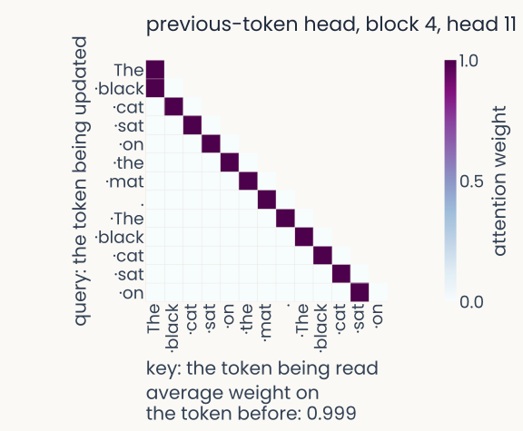
Computed from GPT-2 small (124 million parameters, 144 heads). The model is given no task: it reads the sentence "The black cat sat on the mat. The black cat sat on" and, as in training, predicts the next token at every position, and we record one head's attention weights. A square matrix, rows the token being updated (the query), columns the token being read (the key), with the word pieces of the sentence along both axes; each cell is a softmax weight, after the causal mask, from near-white (0) to dark purple (1); every row sums to 1 and the upper right triangle is empty, because a token may read only itself and earlier tokens. Block 4, head 11, a previous-token head: a dark stripe just below the diagonal, each token reading the one before it. Printed below: average weight on the token before, 0.999. The head was chosen as the one with the largest such average on 20 separate sentences.
Open full-size figure
Real computation: GPT-2 small, weights as trained · head chosen on separate test inputs
- The input: GPT-2 reads The black cat sat on the mat. The black cat sat on and predicts the next token at every position, as in training. We record one head's weights
- Each row: one token's attention weights over itself and earlier tokens; they sum to 1
- This head: each token after the first reads the token just before it, so its output carries that token's value
Slide 7
An induction head
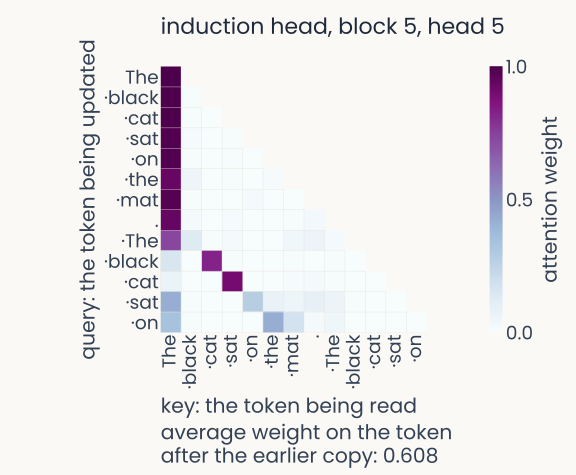
Computed from GPT-2 small (124 million parameters, 144 heads). The model is given no task: it reads the sentence "The black cat sat on the mat. The black cat sat on" and, as in training, predicts the next token at every position, and we record one head's attention weights. A square matrix, rows the token being updated (the query), columns the token being read (the key), with the word pieces of the sentence along both axes; each cell is a softmax weight, after the causal mask, from near-white (0) to dark purple (1); every row sums to 1 and the upper right triangle is empty, because a token may read only itself and earlier tokens. Block 5, head 5, an induction head. In the first clause no token has appeared before, so there is no earlier copy to find, and the weight goes to the first token. In the repeated clause, the second "black" reads the first "cat" and the second "cat" reads the first "sat", the tokens that followed their earlier copies. Printed below: average weight on the token after the earlier copy, over the repeated clause, 0.608. The head has the largest induction weight of all 144 heads on separate repeated random sequences (0.93).
Open full-size figure
Real computation: GPT-2 small, weights as trained · head chosen on separate test inputs
- Text repeats itself: names, phrases. In a repeat, what followed a token last time is a good guess for what follows it now
- This head reads exactly that: in the repeat, black reads cat, cat reads sat; in the first half it parks on the first token
- Why "induction": the text showed A B once; when A returns, the head points to B, a rule induced from the context itself
- Our one-head model could not do this: it takes two heads in a row (later today)
Slide 8
An attention sink
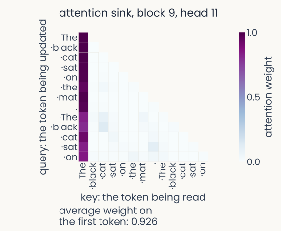
Computed from GPT-2 small (124 million parameters, 144 heads). The model is given no task: it reads the sentence "The black cat sat on the mat. The black cat sat on" and, as in training, predicts the next token at every position, and we record one head's attention weights. A square matrix, rows the token being updated (the query), columns the token being read (the key), with the word pieces of the sentence along both axes; each cell is a softmax weight, after the causal mask, from near-white (0) to dark purple (1); every row sums to 1 and the upper right triangle is empty, because a token may read only itself and earlier tokens. Block 9, head 11, an attention sink: one dark first column, almost every token in both halves of the sentence putting almost all its weight on the first token. Printed below: average weight on the first token, 0.926. The head is the strongest sink (0.983 on 20 separate sentences) among heads that do not copy.
Open full-size figure
Real computation: GPT-2 small, weights as trained · head chosen on separate test inputs
- This head: almost every token puts almost all its weight on the first token, in both halves
- Why: a row's weights must add up to 1, so a head with nothing useful to read still puts them somewhere
- What it does: its output is then the first token's value, nearly the same everywhere: the head contributes almost nothing new
- Vision transformers do the same, on background patches; spare "register" tokens give the weight a place to go (Going further)
Slide 9
Try it: all 144 heads of GPT-2
![Screenshot of the interactive demo of all 144 heads of GPT-2 small, opened on block 5, head 5 and the sentence The black cat sat on the mat. The black cat sat on. Left, the head's attention weights a_ij: one row per token reading, one column per token read, a dot on each row's most-read token; in the first half every row reads the first token, in the repeat black reads cat and cat reads sat. Middle, a 12 by 12 grid with one cell per head, blocks 0 to 11 down and heads 0 to 11 across, colored by induction weight, with block 5, head 5 starred as the strongest. Right, the head's three average weights on one line each, previous-token 0.132, induction 0.929, first-token 0.974, with their ranks, and its knockout: copying loss 0.41 against 0.25 intact, ordinary-text loss 4.74 against 4.69](../images/L16/gpt2_heads_preview.png)
Screenshot of the interactive demo of all 144 heads of GPT-2 small, opened on block 5, head 5 and the sentence "The black cat sat on the mat. The black cat sat on". Left panel, titled "Attention weights a_ij of block 5, head 5": the head's softmax weights, one row per token reading (i), one column per token read (j), each row summing to 1, with a dot on each row's most-read token. In the first clause nearly every row reads the first token; in the repeat, "black" reads "cat" and "cat" reads "sat", the pattern of an induction head. Middle panel, titled "All 144 heads, one cell per head": a 12 by 12 grid, blocks 0 to 11 down and heads 0 to 11 across, each cell one head, shaded by its induction weight; block 5, head 5 is starred as the strongest. Buttons above the grid recolor it; on the left, under the block and head menus, "strongest" buttons jump to the head with the largest previous-token, induction or first-token weight. Right panel: the selected head's previous-token weight 0.132, induction weight 0.929 and first-token weight 0.974, each with its rank among the 144, and the cost of knocking it out: copying loss 0.41 against 0.25 intact (+0.16 nats), ordinary-text loss 4.74 against 4.69 (+0.06 nats), with bars on one shared scale.
Open full-size figureSlide 10
From a head to a model
Attention moves information between positions. What else does a language model need?
Slide 11
The whole model, from the last lecture
Bottom to top, one column per token:
- Embedding + position: token → vector
- Attention (gold): mixes positions
- MLP: each position alone
- 2 and 3 repeat in blocks
- Readout: a probability for every possible next token
Next: several heads, the MLP, the wiring
![Schematic of a transformer, read from the bottom up, with one column per token. At the bottom, six tokens, the characters t, h, e, a space drawn as an underscore, c and a. Each becomes a small blue vector, labelled embedding plus position. A grey line runs up from each vector, the token's residual stream. Inside a dashed frame marked times L blocks, a gold self-attention band spans all six columns: lines from every column fan in to the last one, so the last token reads itself and the five earlier tokens and none after it. Above it, each column has its own small box labelled MLP, the small network that works on each token alone. At the top, an output layer and softmax spans the columns and gives each column's predicted next token: h, e, space, c, a, t, the input shifted by one](../images/L15/transformer_schematic.svg)
Schematic. A decoder-only transformer read from the bottom up, with one column per token. At the bottom, six input characters: t, h, e, a space drawn as an underscore, c and a. Each becomes a small blue vector labelled "embedding + position". A grey vertical line runs up from each vector: that token's residual stream, to which every later step adds its result. Inside a dashed frame marked "times L blocks", a gold self-attention band spans all six columns; lines from every column fan in to the last one, so the last token reads itself and the five earlier tokens and none after it. Above it, each column has its own small box labelled MLP, a small network that works on each token alone. At the top, an "output layer + softmax" band spans the columns and gives each column's predicted next character: h, e, space, c, a, t, the input shifted by one place. The model in the assignment has 4 blocks, width 256 and 4 heads per block.
Open full-size figureSlide 12
Multi-head attention
Several heads let one block read in several ways at once. Run heads side by side:
- Recall: is the width of every token's vector. The one-head model had , and its queries, keys and values were 128 wide too
- Now the width is split among the heads: . The model you train: , , so each head's queries, keys and values have numbers
- A query and a key always have the same length, , because a score is their dot product; values have length
- () mixes the concatenated outputs back to width
Slide 13
Shapes at a glance
| Quantity | Shape | In your model | One row is |
|---|---|---|---|
| one position's vector | |||
| (one head) | one query, one key | ||
| (one head) | one value | ||
| scores, weights | one query against every key | ||
| one head's output | an average of values | ||
| same shape as |
- : tokens in the window (up to 256) · · 4 heads, so
- In code, windows are processed together, a batch: every shape gets in front,
Slide 14
A small network for each position
Attention mixes information across positions. A two-layer network then works on each position on its own, with the same weights everywhere:
![Left: the GELU transfer function, Gaussian Error Linear Unit, plotted for inputs from minus 4 to 3, with the ReLU dashed for comparison. GELU is close to 0 for negative inputs, dips slightly below 0 around minus 1, and becomes nearly equal to its input for positive inputs. Right: the widths of the small network in the assignment's model, drawn to scale: a bar for the input x of 256 numbers, an arrow W[1], which maps 256 numbers to 1,024, to a bar four times longer, the hidden layer of 1,024 numbers with GELU applied to each, and an arrow W[2], which maps them back, to a 256-number output](../images/L16/mlp_gelu.svg)
Schematic plus an exact function plot. Left panel, titled GELU: Gaussian Error Linear Unit: output against input z from minus 4 to 3. The ReLU, dashed, is 0 for negative inputs and equal to its input for positive ones. GELU, solid green, follows it closely but smoothly: near 0 for large negative inputs, a small dip to about minus 0.16 at z = minus 1, 0 at z = 0, about 0.84 at z = 1 and 1.95 at z = 2. Right panel, titled the same small network at every position, 4 times wider in the middle: three horizontal bars drawn to scale, the input x of 256 numbers, the hidden layer of 1,024 numbers, four times longer, with GELU applied to each number, and the output of 256 numbers; magenta arrows between them are labelled W[1], 256 to 1,024, and W[2], 1,024 to 256.
Open full-size figure- GELU, Gaussian Error Linear Unit: a smooth ReLU,
- The hidden layer is 4 × wider than ; it holds most of the model's weights
Slide 15
Residual connections and layer normalization
- Residual: each sublayer adds its output to its input, , as in ResNets. The stream runs straight through; attention and the MLP only add to it
- LayerNorm: rescale each position's vector to mean 0 and variance 1, then a learned scale and shift
- Pre-norm: LayerNorm at the start of each branch, not on the stream
- One block = both branches. Blocks stack: the model you train has 4
![One pre-norm transformer block, read from the bottom up. The residual stream x enters at the bottom and runs straight up the left side to the next block. A first branch leaves the stream, goes through LayerNorm and then multi-head attention, and its output is added back to the stream at a plus sign. A second branch then leaves the stream, goes through LayerNorm and the small network (MLP), and is added back at a second plus sign. LayerNorm sits at the start of each branch, never on the stream itself](../images/L16/block_prenorm.svg)
Schematic of one pre-norm transformer block, read from the bottom up. The residual stream, a vector x for each position, enters at the bottom from the block below and runs straight up the left side to the next block. A first branch leaves the stream to the right, passes through a LayerNorm box and then a gold box, multi-head attention, and its output returns left to a circled plus sign on the stream, where it is added. Above that, a second branch leaves the stream, passes through a second LayerNorm box and a green box, the small network (MLP), and returns to a second circled plus sign. LayerNorm sits at the start of each branch, never on the stream itself; attention and the MLP each add to the stream rather than replace it.
Open full-size figureSlide 16
Why copying takes two heads in a row
![Two bands of word boxes for The black cat sat on the mat. The black, the last black marked as the current position. Top band, block 1, a previous-token head: an arrow from each word to the next, and the first cat receives a tag reading previous: black. Bottom band, block 2, an induction head: the query of the last black, find previous = black, matches the key of the first cat, previous: black, along a curved gold arrow; the value of cat, cat, flows to a box reading predict: cat. A faint dashed arrow from the last black back to the first black is labelled one head alone: finds black, reads back black](../images/L16/induction_two_steps.svg)
Schematic. Two horizontal bands of word boxes for "The black cat sat on the mat. The black", with the last "black" marked as the current position. Top band, block 1, a previous-token head: a short arrow from each word to the next, so each position receives information about the word just before it; the first "cat" receives a tag reading "previous: black". Bottom band, block 2, an induction head: the query of the last "black", "find previous = black", matches the key of the first "cat", which now carries "previous: black". A curved gold arrow joins them, and the value of that position, "cat", flows to a box reading "predict: cat". A faint dashed arrow from the last "black" back to the first "black" is labelled "one head alone: finds black, reads back black". A single head can find the earlier copy of the current word, but only a head reading the tag left by an earlier head can find the word that came next. That is why copying needs two heads in a row.
Open full-size figure- Problem (dashed): one head finds the earlier black, but reads back black
- Block 1: each token notes the token before it; the first cat gets "previous: black"
- Block 2: the second black seeks "previous: black", finds cat: predict cat
Slide 17
Try it: inside a transformer
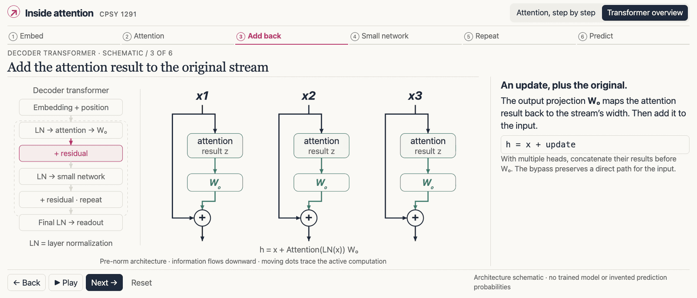
Screenshot of the interactive "Inside attention" demo, transformer overview, at step 3 of 6, "Add back". A row of six step tabs across the top: Embed, Attention, Add back, Small network, Repeat, Predict. On the left, a stack of boxes for the decoder transformer, read top to bottom: embedding + position; LN, attention, then the output weights W_o; + residual (highlighted); LN, small network; + residual, repeat; final LN, readout. LN is layer normalization. In the middle, three token streams, x1, x2 and x3, drawn top to bottom. In each, the stream passes through an "attention result z" box and a W_o box, and a bypass line carries the original input around both to a plus sign where the two are added, under the equation h = x + Attention(LN(x)) W_o. On the right, the text "An update, plus the original": W_o maps the attention result back to the stream's width, and the result is added to the input, h = x + update. Back, Play, Next and Reset buttons sit at the bottom. In this demo information flows downward, while the schematic on the previous slide flows upward.
Open full-size figure
Slide 18
Training a model to write
What do we train it to do, and how do we know it learned anything?
Slide 19
One objective: predict the next character
- Text gives its own labels: at every position , the target is the character that comes next
- The last layer outputs, at each position, a probability for every character:
- Loss: cross-entropy, averaged over positions, in nats
- With the causal mask, one forward pass gives all predictions: training examples at once
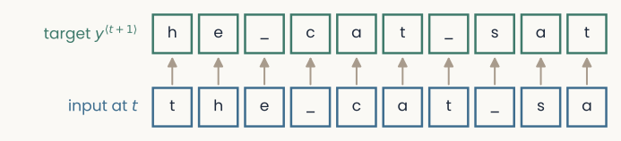
Schematic. Two rows of character boxes. The bottom row, in blue, is the input: t, h, e, an underscore for a space, c, a, t, underscore, s, a. The top row, in green, is the target at each position, the next character: h, e, underscore, c, a, t, underscore, s, a, t. A gray arrow runs up from each input box to its target. One window of text gives as many training examples as it has characters, and the causal mask keeps each position from seeing its own target.
Open full-size figure
Slide 20
Batches and the training loop
- Cut random windows of characters from the training text; input = the first , target = the last
- Stack windows: inputs of shape , logits of shape
- One step: clear the old gradients, run the model forward to the logits, compute the cross-entropy over all positions, call
backward(), take one step of AdamW (Adam with weight decay). The cross-entropy applies the softmax itself - Every few hundred steps, measure the loss on held-out text
- Landmarks: a uniform guess scores ( nats for 97 characters); a bigram table scores far lower, a trained transformer lower still
- Recall the perplexity : the number of equally likely characters that would give the same average loss ( for the uniform guess)
Slide 21
Generating text: sample, append, repeat
- Feed in a prompt
- Read the model's probabilities for the next token, at the last position
- Draw one token from them and append it to the prompt
- Repeat; keep only the last tokens if the text grows longer than the context
- Temperature: divide the logits by a number before the softmax. Below 1: the likely tokens get likelier, predictable text; above 1: the odds even out, more varied text, then nonsense
- Temperature near 0 is greedy (always the most likely token): it tends to loop
- Every new token takes one more pass through the whole model: a 1,000-token reply is 1,000 passes
Slide 22
Temperature in a real model
Prompt: The black cat sat on the mat. Then · GPT-2 small, 40 new word pieces, same seed
- Greedy (always the most likely piece): he looked at the white cat. "You're not going to be able to see me," he said. "I'm not going to be able to see you," the white …
- Temperature 0.7 (≈ 7 choices for the first piece): a bright flash of light shot through the night sky. A small man was squatting on the ground next to him. He had a long blond hair. His eyes were a large hematite.
- 1.0 (≈ 42): a button seven came down and… A black cat the size of the Olympic flame moved out of the end of the arm she so enjoyed to sit on.
- 1.5 (≈ 2,630): along came seven more faces perched… Goldbacks Skooter bipartisan candidates spill radical words for CathP wrestler Sly Blastin …
Real computation: GPT-2 small, pure sampling, torch seed 0; "≈ 7": like a choice among 7 equally likely pieces
- Same model, same probabilities: how you draw decides the text. Too low loops, too high is nonsense; chat systems use 0.7–1 and top-p (keep the likeliest pieces up to probability p, rescale, draw)
Slide 23
What did the model learn?
Read its heads, then lesion them
Slide 24
Three ways to open a model
- Read: look at where each head puts its weights; or fit a readout on the residual stream after each block, as you did on neural populations. If it works on held-out text, that block holds the information, though the model may not use it
- Lesion: switch a part off and measure what fails, compared with a control
- Patch: copy a part's activity from one run into another and measure what comes back
- Reading suggests a hypothesis; lesions and patches test it
Slide 25
What heads do, and what their weights cannot tell you
- In trained language models, single heads track relations people can name: verb to its object, determiner to its noun, pronoun to its referent
- An attention map shows where a head reads. It does not show why the output is what it is
- As with attribution maps in the explainability lecture, a map is a hypothesis; changing the input or knocking the head out tests it
Slide 26
A behavior to explain: copying a new name
- A child named Zefam. The sun was warm. Later, Zefam smiled. No training story contains "Zefam"; the second time, a model can predict the letters e, f, a, m well only by copying the first mention
- Control: A child named Molly. The sun was warm. Later, Zefam smiled. The second name is still Zefam, but no Zefam came before it: nothing to copy, so e, f, a, m must be guessed
- Benefit (nats) = loss on efam in the Molly version − loss on efam in the Zefam version: large if the model copies, near 0 if not
- The one-head model (one attention layer): benefit about 0; it cannot copy ("Why copying takes two heads in a row"). The model you train, 4 blocks of 4 heads, can form a previous-token + induction pair: large benefit. Which heads do it?
Slide 27
Knock out a head: a lesion study
- Knock out one head: replace its output with zeros, so it adds nothing to the residual stream, and run the model again; the other heads are untouched
- Measure the loss on the behavior the head is thought to support, and on ordinary text as a control
- A claim that a head is specific needs three results: a large effect on the behavior, a small one on ordinary text, and a small effect when other heads are knocked out instead
- If knocking out a head changes nothing, another head may be doing the same job. Switch the head back on before the next test
Slide 28
The same lesion in GPT-2
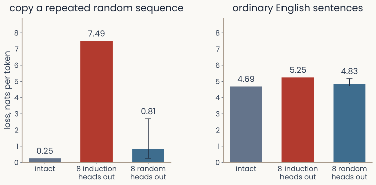
Computed from GPT-2 small. Two bar charts of loss in nats per word piece, lower meaning better prediction. Left, copying: predicting the second half of a sequence of 50 random word pieces repeated twice, which can only be done by copying. Intact model, 0.25. With the 8 heads of highest induction weight set to zero, 7.49, about thirty times the intact loss and approaching a uniform guess (10.8). With 8 random other heads set to zero, 0.81 on average over 10 draws, with a range bar up to 2.7. Right, ordinary English: 20 sentences. Intact, 4.69; induction heads out, 5.25; random heads out, 4.83. Removing 8 of 144 heads raises the copying loss about thirtyfold and the ordinary-text loss by 0.56 nats.
Open full-size figure
Real computation: GPT-2 small, 144 heads, ranked by induction weight on repeated random tokens; knockouts zero the head's output
- Knock out the 8 heads with the highest induction weight: loss on a repeated random sequence rises from 0.25 to 7.49 nats (a uniform guess is 10.8); loss on ordinary text rises by 0.56 nats. Knock out 8 random heads instead: 0.81 and 4.83 nats. Large where predicted, small elsewhere, with a control
Slide 29
The converse test: put the activity back

Schematic of the assignment's patching experiment. Three rows of character boxes for the same short story, each ending in a second mention of the name Z e f a m. Row 1, Clean (the donor): the earlier mention is also Zefam, so the model can copy, and its loss on the letters e, f, a, m is low. Row 2, Corrupted: the earlier mention is Molly, so there is nothing to copy, and the loss on e, f, a, m is high. Row 3, Patched: the corrupted story, with gold arrows bringing one head's output at the four positions Z, e, f, a (the positions that predict the next letter) down from the clean row; the loss on e, f, a, m is a question mark, the quantity the experiment measures. A note below states that the earlier letters are the true text, so the model is never writing the name freely. If putting one head's clean output back lowers the loss toward the clean value, that head carries the copying signal.
Open full-size figure- A knockout shows whether a part is needed. A patch shows whether the information is in a part's activity: copy that activity from the clean run (first mention Zefam, the donor) into the corrupted run (first mention Molly)
- Recovery : 0 if nothing comes back, 1 if all of it does
Slide 30
What attention gains, and what it costs
- Long range, content-dependent: any position reaches any earlier position in one step, with weights computed from the input itself, so the links change with every input
- Fast to train: the loss at every position of a window is computed at once, in a few matrix products; the causal mask makes this possible
- Scale: GPT-2 small reads 1,024 tokens, about two pages. Current models read up to a million tokens, about 750,000 words or eight novels, with the mechanism unchanged
- The price: a window of tokens needs scores, so doubling the length quadruples the attention computation, and the keys and values of every earlier token stay in memory. A long window does not mean the model uses all of it: accuracy is lowest when the relevant text sits in the middle
Slide 31
Recap
- Trained heads take on roles you can name: read the previous token, copy what followed the current token last time (induction), or park the weight on the first token (sink).
- A block: LayerNorm, multi-head attention, add; LayerNorm, a small network per position, add. Blocks stack along the residual stream; the readout gives the next-token probabilities
- Training: random windows, the next-token cross-entropy at every position at once, checked on held-out text. Writing: sample, append, repeat, with a temperature
- Opening a model: read the weights or a readout to form a hypothesis, then knock out and patch back to test it, with controls. A circuit found in a small model is a hypothesis for a large one
Slide 32
Minute paper
Submit on Canvas → Minute papers → Minute Paper 17 (access code read out in class).
Write three brief points in your own words:
- A language model is only trained to predict the next word. How can it end up
copying a name it has seen once earlier in a story? - Something you do not yet understand, or a question still open
- Another idea you found interesting, and why it matters for brains, behavior or AI
Credit for a thoughtful attempt, not for being correct.
Slide 33
Further reading for the research trail
Optional: a few research-trail entries over the semester. Any paper mentioned in any lecture qualifies, but papers from these lectures are preferred.
- Yin & Steinhardt ICML 2025: which heads matter for in-context learning, in 12 models
- Feucht et al. 2025: concept-level induction heads copy whole words, not word pieces
- Aoyama, Wilcox & Schneider 2025: when induction heads appear in training, and why
- Csordás, Manning & Potts NeurIPS 2025: the second half of a deep model's residual stream does little new work
- Khandelwal & Pavlick 2025 (Brown): how models compose two facts, decoded from the residual stream
- Méloux et al. ICLR 2025: is a mechanistic explanation unique? Often not
- Singh et al. ICML 2024: what needs to go right for an induction head to form
- Koenig & Negrello 2026: mapping transformer operations onto the brain
Slide 34
Going further
Optional: heads in long documents and in vision, sampling in real models, another circuit
Slide 35
Twenty heads find a fact in a long document
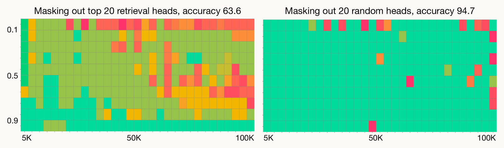
Reproduced from Wu et al. (2025), Figure 1, for LLaMA-2-7B-80K. Two grids of the "needle in a haystack" test. In each grid, context length runs across from 5,000 to 100,000 tokens and the depth at which a fact was hidden in the document runs down from 0.1 (near the start) to 0.9 (near the end). Each cell is one test: green is a correct answer to a question about the hidden fact, yellow to red increasingly wrong. Left, with the 20 highest-scoring retrieval heads masked: many cells are yellow and red, and overall accuracy is 63.6%; many of the wrong answers are made up. Right, with 20 random heads masked: almost every cell stays green, accuracy 94.7%. Masking 20 of the model's 1,024 heads lowers accuracy from 94.7% (20 random heads masked) to 63.6%.
Open full-size figure
- LLaMA-2 (7 B) must recall a fact hidden in 5,000–100,000 tokens. Without its top 20 retrieval heads, accuracy drops to 64%; without 20 random heads, 95%
- Retrieval head: while answering, its strongest weight is on the word being copied
Slide 36
The same mechanism in vision
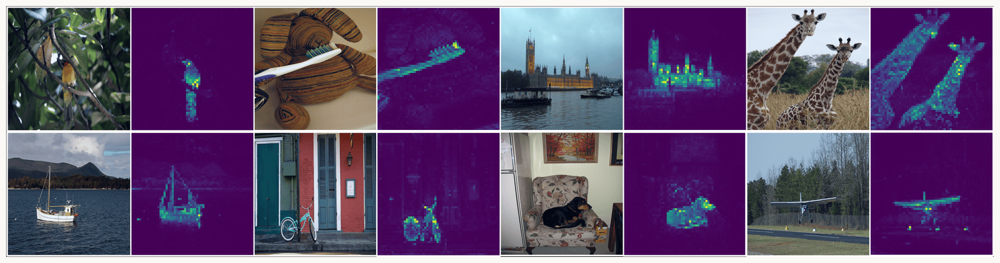
Reproduced from Caron et al. (2021), Figure 1. Eight photographs in two rows, each followed by a dark purple map of the same size: a yellow bird on a branch, a toothbrush on a striped cushion, the Houses of Parliament across the Thames, two giraffes, a sailboat, a bicycle against a building, a dog asleep in an armchair, and a small airplane over a runway. Each map is the attention of the class token in the last block of a DINO vision transformer, one weight per 8 by 8 pixel patch, bright where the weight is high; with images several hundred pixels wide this is a grid of dozens of patches on each side (60 by 60 at 480 pixels), which is why the maps look fine-grained. In every case the bright patches trace the object's outline (the bird, the toothbrush, the building's towers, both giraffes, the boat's mast and hull, the bicycle's wheels, the dog, the plane) and the background stays dark. The network was trained without labels, masks or boxes.
Open full-size figure
- DINO, a vision transformer trained without labels: each 8 × 8-pixel patch is a token, and the heads work as they do on words. The attention of one extra summary token (the class token) outlines the object
- Small patches give fine maps: a 480-pixel image is 60 × 60 = 3,600 patches, one weight each
Slide 37
Where the bright patches come from
- In large vision transformers (DINOv2, OpenCLIP), a few background patches get very large vectors, and other heads put most of their weight on them: attention sinks, like GPT-2's first token
- The cause is a handful of neurons in one block's small network. Each outputs one number per patch, and at those few patches the numbers are huge
- Moving them: while the model runs, overwrite those neurons' outputs: 0 where they were huge, the huge value at patches you choose. Nothing else changes: a patch, as in the assignment
- Or put the huge values in one extra token added to the input, a register
Slide 38
Attention sinks in vision, and what they hide
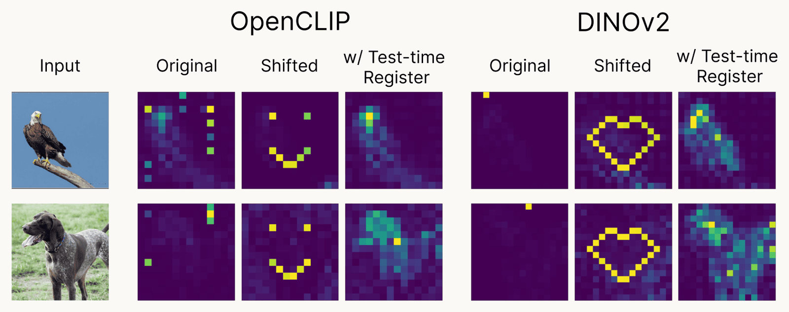
Reproduced from Jiang et al. (2025), Figure 1. Two photographs, an eagle and a dog, each followed by attention maps from two vision transformers, OpenCLIP and DINOv2, in three versions. Original: the map as the trained model computes it, a few very bright patches scattered over the background and little on the animal. Shifted: the authors move the high activations to patches of their choosing, so the bright spots form a smiley face or a heart, showing that their location is arbitrary. With a test-time register: the high activations are moved to one extra token added to the input, and the remaining map outlines the eagle and the dog. No model is retrained. The bright background patches are the vision counterpart of the first-token sink in GPT-2.
Open full-size figure
- Original: sinks on the background · Shifted: the authors wrote the huge values at patches forming a smiley or a heart, and the sinks appear exactly there · With a test-time register: written into the extra token, and the map shows the animal
Slide 39
The same recipe in real systems
Does the toy recipe survive scale?
Slide 40
Try it: temperature and sampling
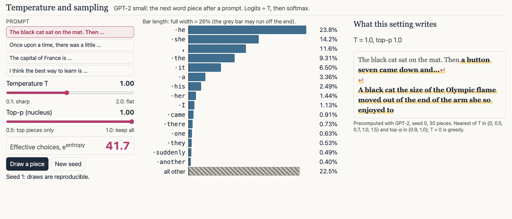
Screenshot of the interactive temperature and sampling demo. Computed from GPT-2 small after the prompt "The black cat sat on the mat. Then", at temperature 1.0 and top-p 1.0. A bar chart of the 15 most likely next word pieces, led by "he" 23.8%, "she" 14.2%, a comma 11.6%, "the" 9.3% and "it" 6.5%, and a hatched bar for all other pieces together, 22.5%. A readout gives 41.7 effective choices, e to the power of the distribution's entropy. On the left, buttons for four prompts, sliders for temperature and top-p, and Draw and New seed buttons; on the right, the continuation GPT-2 writes at that setting. Lowering the temperature to 0.7 concentrates the bars (about 7 effective choices); raising it to 1.5 flattens them (about 2,630). Top-p cuts the hatched tail.
Open full-size figure
Slide 41
The loss ladder with real models
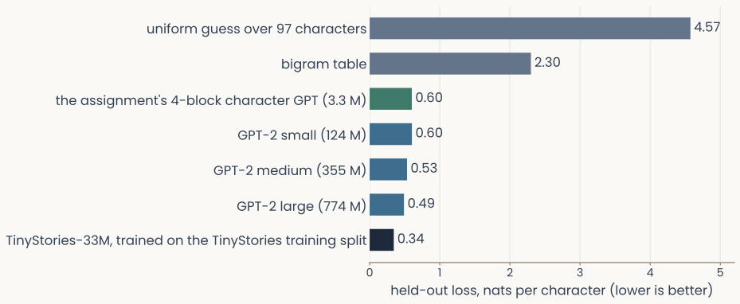
Computed. Horizontal bars of held-out loss, in nats per character, on the same text, the first 40 stories of the TinyStories validation split; shorter is better. From top to bottom: a uniform guess over 97 characters, 4.57; the bigram table, 2.30; the assignment's 4-block character model, 0.60; GPT-2 small, 0.60; GPT-2 medium, 0.53; GPT-2 large, 0.49; TinyStories-33M, a model trained on the training split of this collection, 0.34. Word-piece models' losses are converted to nats per character by dividing by the characters their pieces cover. A small model trained on this kind of text matches GPT-2 small, trained on 40 GB of web text, and a specialist beats them all.
Open full-size figure
Real computation: the same 36,000 held-out characters scored by every model; word-piece losses converted to nats per character
- The loss table of slide 3, continued: a 3-million-weight character model like the assignment's ties GPT-2 small on children's stories; GPT-2 large, 230 × larger, is only 0.11 nats per character lower; a 33-million-weight model trained on such stories beats them all
Slide 42
A different behavior, a different circuit
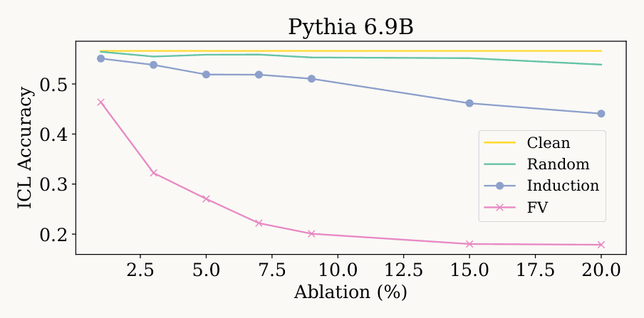
Reproduced from Yin and Steinhardt (2025), Figure 1a, for Pythia 6.9B. A line plot of few-shot in-context-learning accuracy (vertical, 0.2 to 0.55) against the percentage of attention heads ablated (horizontal, 1 to 20%). Four lines. Clean, yellow, is flat at about 0.56. Random ablation, green, stays near 0.55, ending at 0.54. Ablating induction heads, blue, lowers accuracy slowly, from 0.55 at 1% to 0.44 at 20%. Ablating function-vector (FV) heads, pink, drops it steeply: 0.46 at 1%, about 0.32 at 3%, 0.20 at 9% and 0.18 at 15 and 20%. For learning a task from examples, as opposed to copying, function-vector heads matter far more than induction heads.
Open full-size figure
In the figure: ICL = in-context learning, a task learned from examples in the prompt · FV = function-vector heads · ablation = knockout
- Copying needs induction heads. Learning a task from a few examples is different: in 12 models of up to 6.9 billion weights, knocking out induction heads lowers its accuracy a little; knocking out function-vector heads, which encode which task the examples show, cuts it to about a third
- A circuit found in a small model is a hypothesis for a large one